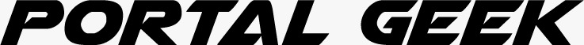
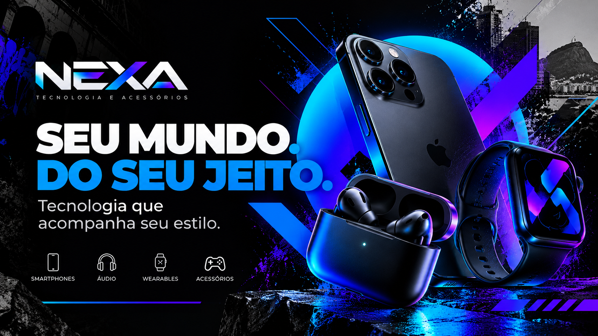
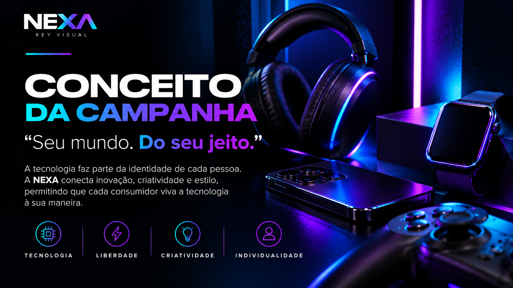
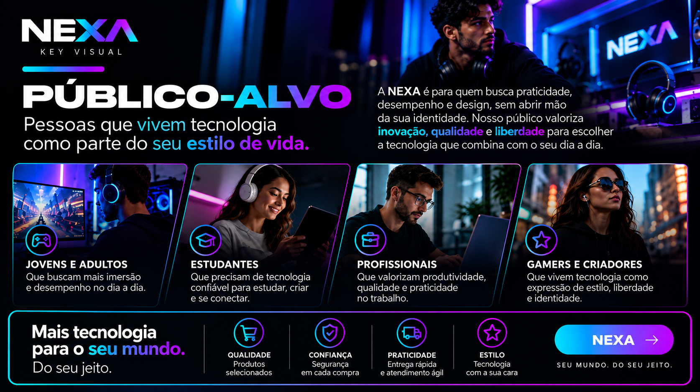
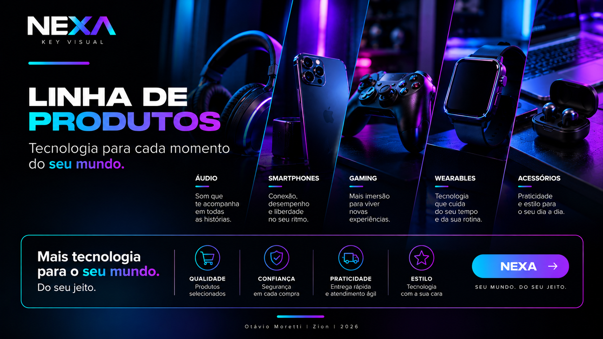
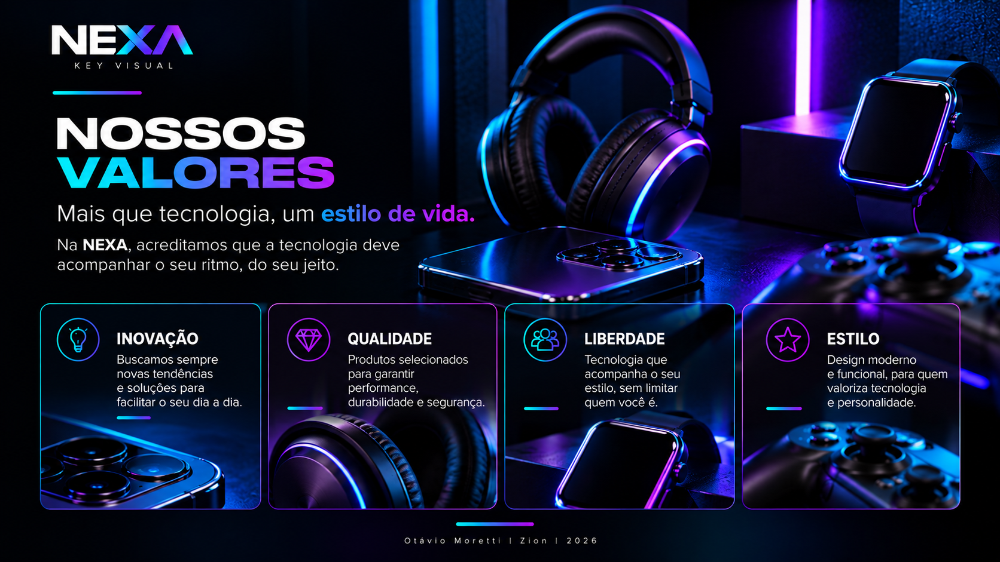
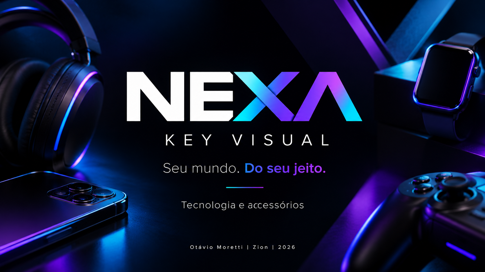
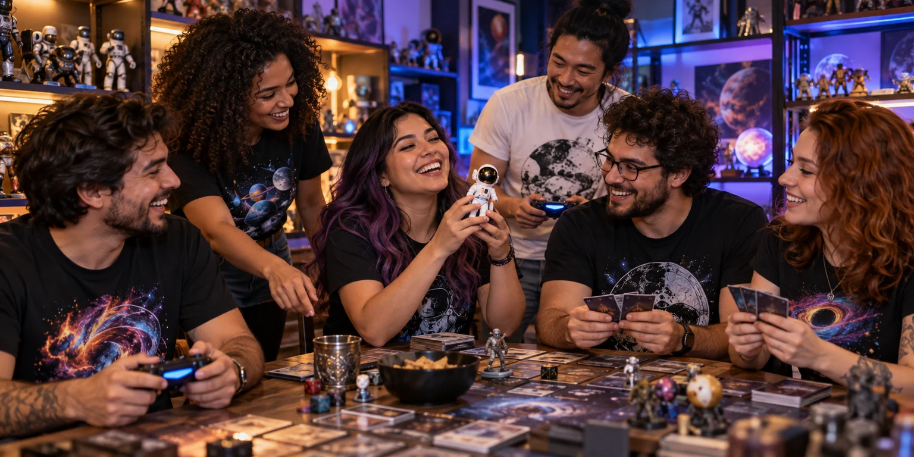

UM ESPAÇO PARA EXPLORAR
Laboratório Criativo
Experimentos visuais, interfaces e ideias digitais em construção.
VISUAL DESIGN WEB / IA APLICADAPortal Geek
Um universo visual que conecta identidade, imagens e navegação. O projeto reúne desenvolvimento web e criação com IA em uma experiência de loja geek.
Escolha seu portal
A entrada interativa do Portal Geek: explore os caminhos para o site, o catálogo e os eventos.


- Marca
- O lettering inclinado dá movimento ao nome. A aplicação monocromática se destaca mesmo ao lado de imagens com muitas cores.
- Tipografia
- No site, Montserrat estrutura os títulos; DM Mono aparece nos detalhes. A diferença de escala separa as mensagens principais das informações de apoio.
- Composição
- A imagem de abertura concentra o portal à direita e deixa uma área mais livre à esquerda para o título e os caminhos de navegação.
Da imagem à interface
O universo visual continua em catálogo, comunidade e encontros. Cada seção tem uma função: apresentar, ajudar a explorar produtos ou mostrar a proposta de convivência.
Clareza dentro da experiência
Navegação por seções, categorias e filtros organizam um conteúdo visualmente rico. O visitante pode explorar o projeto sem depender apenas da rolagem.
Apresentação da proposta
A apresentação no Canva complementa o site. Ela reúne a proposta visual em outro formato e permite conhecer o projeto além da interface publicada.
Conhecer a apresentaçãoNEXA
Uma identidade visual para tecnologia e acessórios, construída em torno da ideia “Seu mundo. Do seu jeito.” A campanha aproxima produtos, estilo de vida e expressão pessoal.
Aqui estão as artes do projeto: do conceito da campanha às peças que apresentam produtos, público e valores.

Seu mundo. Do seu jeito.
A campanha reúne a marca, o slogan e os dispositivos em uma composição de alto contraste. Ciano e violeta conectam tecnologia e expressão pessoal.
Ver arte em tamanho original
Tecnologia como expressão de identidade
A proposta conecta inovação, criatividade e estilo. Tecnologia, liberdade, criatividade e individualidade orientam a comunicação da marca.
Ver arte em tamanho original
Para quem vive tecnologia no dia a dia
Jovens adultos, estudantes, profissionais, gamers e criadores. A apresentação relaciona praticidade, desempenho e design ao estilo de vida desse público.
Ver arte em tamanho original
Um universo de tecnologia e acessórios
Áudio, smartphones, gaming, wearables e acessórios organizam a proposta visual. As categorias compartilham uma linguagem de cor e composição.
Ver arte em tamanho original
Inovação, qualidade, liberdade e estilo
Os valores aparecem associados a produtos e situações de uso, aproximando o discurso da marca de suas aplicações visuais.
Ver arte em tamanho original
Identidade reunida em uma apresentação
A capa estabelece o tom das demais peças: fundo escuro, marca central e dispositivos nas bordas. O slogan mantém a proposta da campanha em evidência.
Ver arte em tamanho originalDireção visual
A marca angular e o contraste entre preto, ciano e violeta dão unidade à campanha. Os dispositivos e as formas diagonais sustentam a sensação de movimento.
Mensagem e público
O slogan coloca a individualidade no centro. A apresentação explica para quem a marca se comunica e como tecnologia se relaciona com praticidade, desempenho e estilo.
Consistência entre peças
Conceito, produtos e valores compartilham a mesma linguagem. A identidade continua reconhecível enquanto cada composição apresenta uma informação diferente.
IA aplicada
Um apoio para explorar imagens, testar conceitos e desenvolver ideias. A direção visual dá contexto às possibilidades: o que comunicar, como compor e onde cada imagem faz sentido.

Da ideia de loja à ideia de encontro
As pessoas e os objetos compartilhados tornam a comunidade o tema central. Luzes azuis e roxas conectam a cena à abertura, enquanto os tons quentes aproximam a composição de um ambiente de convivência.
Leitura visual da imagem aplicada ao projeto.
01Imagens e conceitos visuais
Explorar atmosfera, luz, cor e referências para construir imagens que façam parte da identidade do projeto. O Portal Geek reúne essa abordagem em sua apresentação visual.
02Interfaces e protótipos
Uma imagem precisa conviver com títulos, links e conteúdo. O Portal Geek mostra a aplicação na web; a apresentação NEXA mostra como uma identidade se mantém consistente em peças com conteúdos diferentes.
03Estudos de criação
Avaliar coerência entre imagens, relação com a marca e adequação à seção. Uma cena de comunidade cumpre uma função diferente da imagem de abertura ou de um produto do catálogo.
04Brief de estudo
Para explorar uma cena semelhante: um encontro de fãs em uma loja, com objetos compartilhados, iluminação azul e roxa e pontos de luz quente. A composição deve comunicar convivência e reservar espaço para funcionar na interface.
Exemplo de brief para novos estudos, não o prompt original da imagem.
04 / PRÓXIMOS EXPERIMENTOS
Em construção
Os próximos estudos vão aprofundar a aplicação das identidades em interfaces e a relação entre imagens, conteúdo e navegação.
- Aplicações digitais para a NEXA
- Composições responsivas com imagens e tipografia
- Novos conceitos visuais com IA